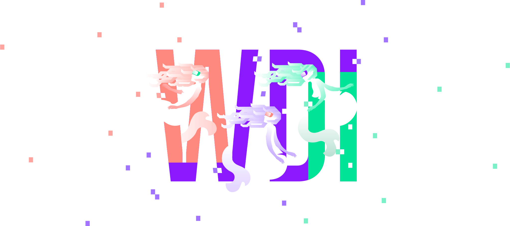
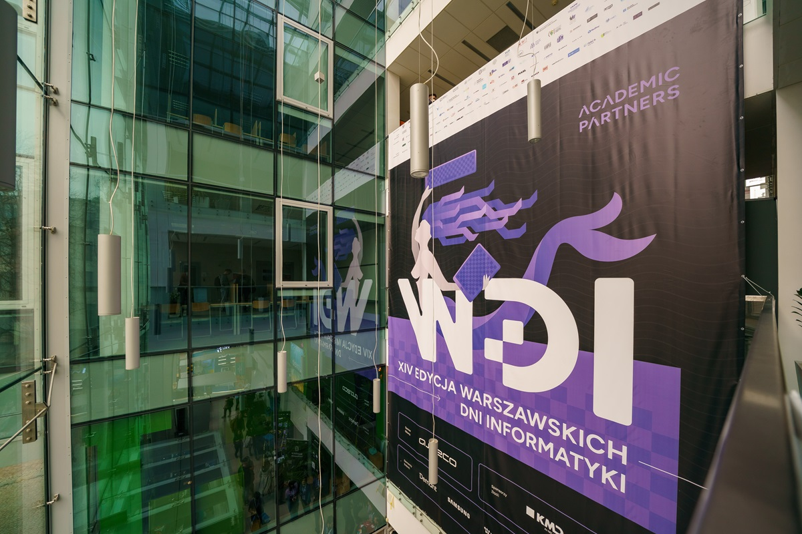
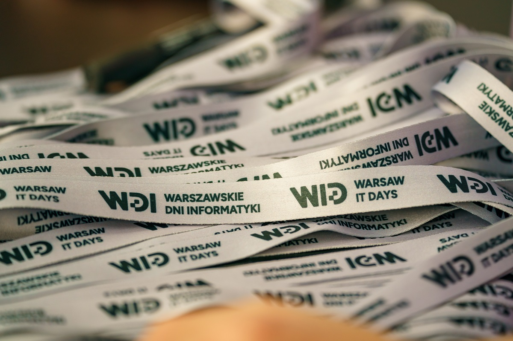
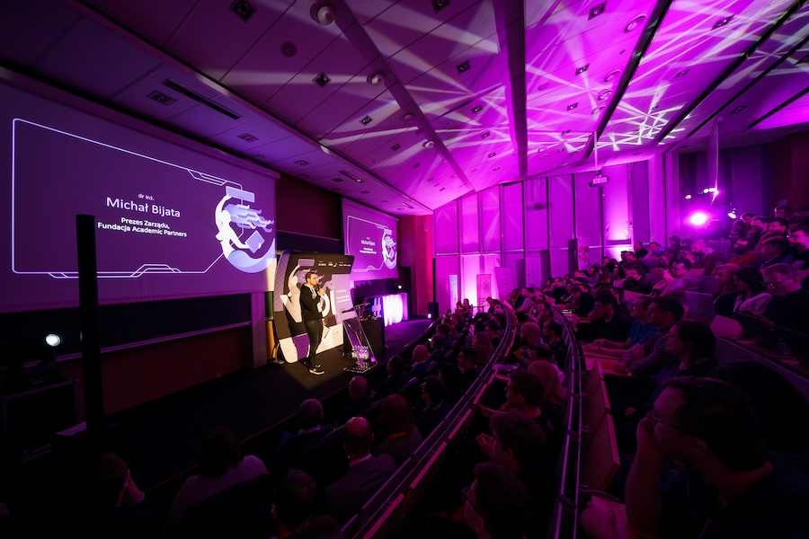
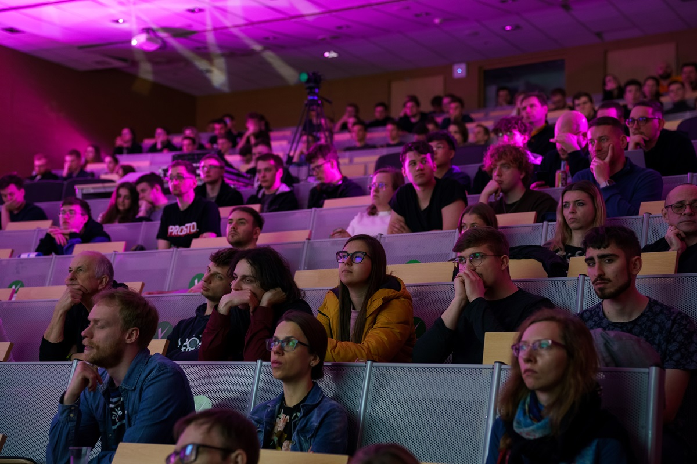
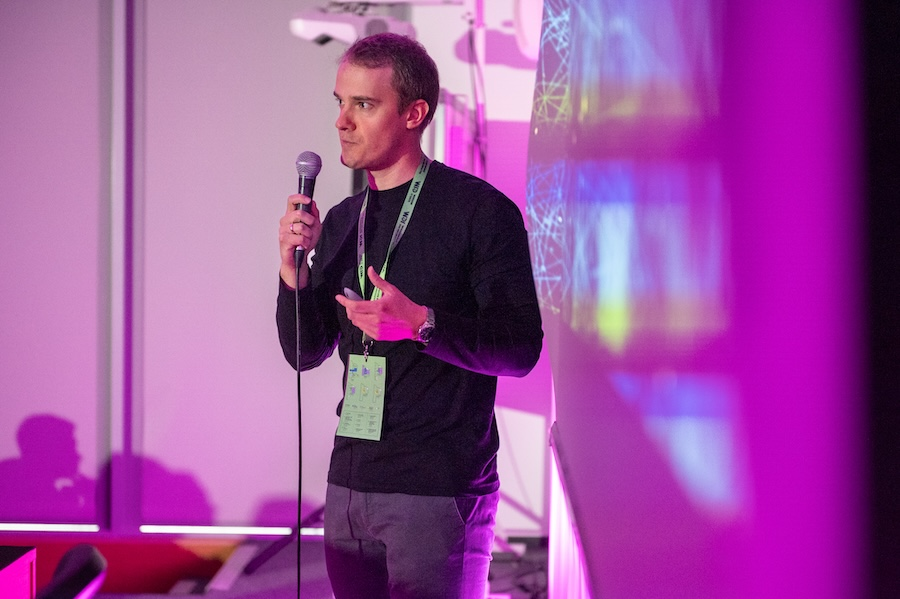
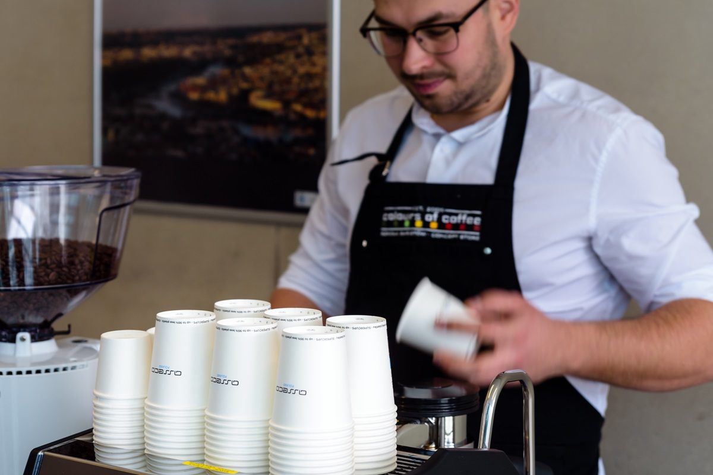

Attend iconic IT & Data Science community event
04.04.2025 Online
05.04.2025 MiNI, Warsaw University of Technology
Warsaw IT Days is an iconic event of the Polish IT and Data Science community,
which gathers over
10,000
people every year.
Agenda
Check Agenda 2025 - Selected by practitioners, the most interesting speeches on trends, latest solutions and production experiences.

08:30-09:00
Official Openning - Online
09:00-10:35
AI Malware and the Future of Cyber Defense
11:00-13:00
The truth behind game development process
13:00-13:35
Agent Evaluation for Farmer Chatbots
14:35-15:35
Bringing the Power to Mobile
15:40-17:00
Introducing design system into mature codebase
17:00-18:00
Technical Analysis libraries in Python
Find out why you should join
Knowledge
- Selected by practitioners, the most interesting speeches on trends, latest solutions and production experience
- Same specifics and practical knowledge not available in tutorials
- Top speakers from Poland and abroad
- Topics at every level
- 3-month access to 2025 speech recordings
Networking
- Largest Polish IT / Data Science community
- Dedicated matchmaking application
- Meetings, discussions and exchange of experiences
- Evening afterparty with speakers
Career
- All major IT / Data Science employers in one place
- Access to non-public offerings at junior / mid / senior level
- 1:1 meetings with leading employers in the industry, online or onsite
- Ability to apply to all IT Job Fair exhibitors at once, even without a resume
Event organizers


See what previous editions looked like





